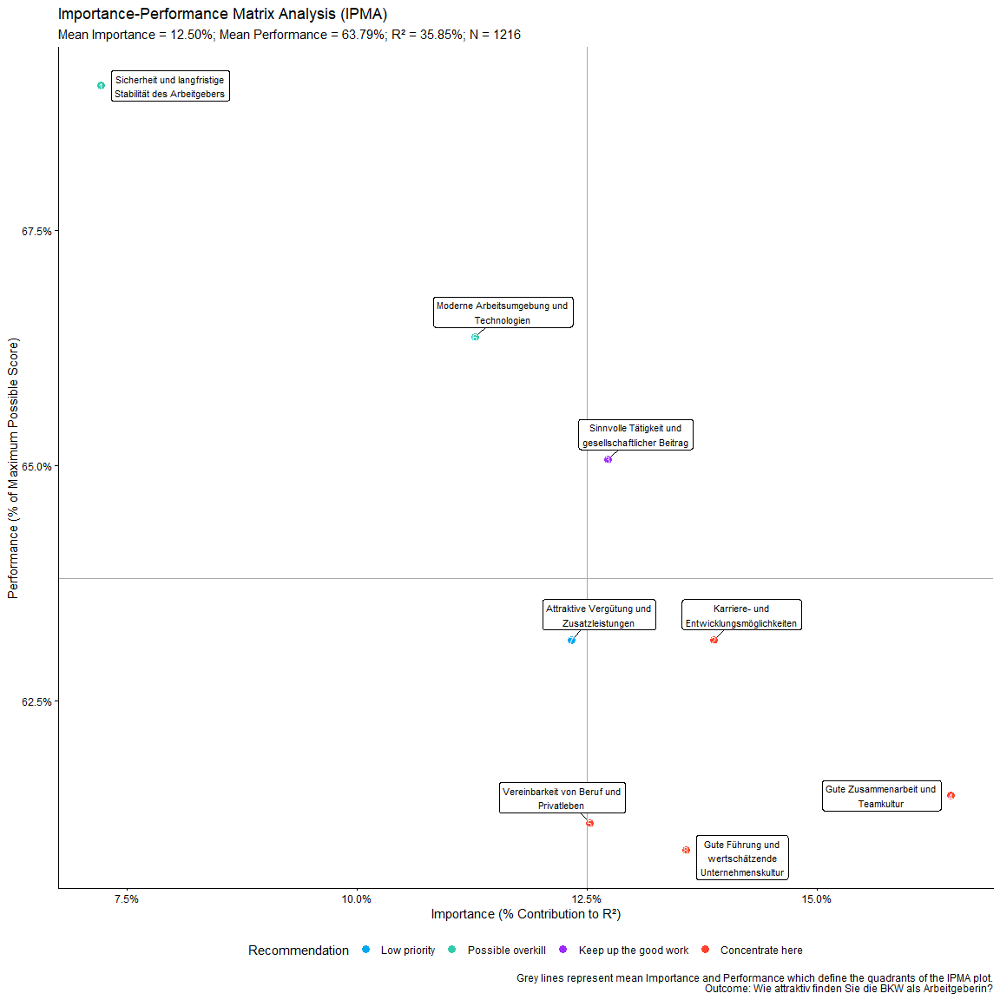

The goal of YouAnalyser is to provide Analytics Partners of YouGov DACH with a convenient and standardized way to perform core analyses on survey data, such as Key Driver Analysis (KDA). The package includes functions for data preprocessing, exploratory data analysis (EDA), and KDA (more to come), all designed to work seamlessly with survey data in the haven::labelled() format. By using YouAnalyser, you can save time and ensure consistency in your analyses across different projects.
Installation
You can install the development version of YouAnalyser from GitHub with:
# install.packages("pak")
pak::pak("EGuizarRosales/YouAnalyser")Example
This is a basic example which shows you how to conduct a End-2-End Key Driver Analysis using the YouAnalyser package. For a more detailed walkthrough, please refer to the vignettes included in the package, which provide step-by-step guides on how to use the various functions for KDA:
library(YouAnalyser)
library(haven)
res <- kda_regression(
data = bkw_processed,
outcome = "F600",
predictors = paste0("F800_", 1:8),
diagnostics = TRUE,
importance_method = "auto"
)
#> Warning: '.cpt' and '.cdl' are depreciated arguments to 'domir' as of version 1.3.
#> Use '.cdl' and '.cpt' as arguments to 'print()' instead.res is a list containing the results of the KDA, including the fitted regression model, variable importance and performance measures, and plots. The most important outcome is the “Importance Performance Map Analysis” (IPMA) plot, which can be accessed like this:
res$plots$ipma_scatterPlot$p
The data visualized in this plot can be accessed like this:
res$plots$ipma_scatterPlot$d
#> # A tibble: 8 × 13
#> predictor Importance_Raw Importance_Ratio Importance_Percent Importance_Rank
#> <chr> <dbl> <dbl> <dbl> <dbl>
#> 1 F800_1 0.0259 0.0722 7.22 8
#> 2 F800_2 0.0498 0.139 13.9 2
#> 3 F800_3 0.0456 0.127 12.7 4
#> 4 F800_4 0.0590 0.165 16.5 1
#> 5 F800_5 0.0449 0.125 12.5 5
#> 6 F800_6 0.0405 0.113 11.3 7
#> 7 F800_7 0.0442 0.123 12.3 6
#> 8 F800_8 0.0487 0.136 13.6 3
#> # ℹ 8 more variables: Performance_Raw <dbl>, Performance_Ratio <dbl>,
#> # Performance_Percent <dbl>, Performance_Rank <int>, recommendation <fct>,
#> # predictor_nr <int>, label <chr>, label_withPred <chr>